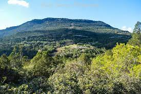
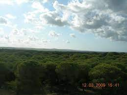
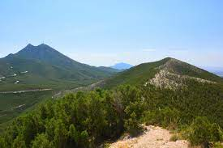

Bou Argoub est une ville tunisienne située à une quarantaine de kilomètres au sud de Tunis, à l'entrée de la péninsule du cap Bon. Rattachée administrativement au gouvernorat de Nabeul, elle constitue une municipalité comptant 11 990 habitants en 20142. Située au pied de la dorsale tunisienne, dans la plaine de Grombalia, c'est un important centre agricole dédié aux cultures maraîchères et arboricoles (olivier, arbres fruitiers, etc.) mais surtout à la viticulture. Elle est connue pour la production d'un vin rouge, le Château Bou Argoub, figurant dans l'AOC Mornag. Située sur les axes routiers RN1 et A1, à proximité de l'agglomération de Tunis et du port de Radès, elle accueille deux zones industrielles. Les entreprises de la Société de fabrication des boissons de Tunisie (SFBT), dans l'industrie agroalimentaire, et Assad, dans l'industrie électrique, sont les principaux employeurs.
Foret de Dar Chichou (Forêt de Dar Chichou) est un/une forêt (s) (class V - Végétation) en Gouvernorat de Nabeul (Nabul), Tunisie (Africa), ayant le code de région Americas/Western Europe. Foret de Dar Chichou est situé à 38 mètres d'altitude. Les coordonnées géographiques sont 36°57'48" N et 10°58'56" E en DMS (degrés, minutes, secondes) ou 36.9633 et 10.9822 (en degrés décimaux). La position UTM est PF79 et la référence Joint Operation Graphics est NJ32-16. L’heure locale actuelle est 16:40; le lever du soleil est à 07:46 et le coucher du soleil est à 19:54 heure locale (Africa/Tunis UTC/GMT+1). Le fuseau horaire pour Foret de Dar Chichou est UTC/GMT+1 En 2021 l’heure d’été est valable de - à -. A Forêt (s) est une zone dominée par une végétation arborescente.
Le parc national de Boukornine est un parc national du nord de la Tunisie centré autour du Djebel Boukornine. Créé le 12 février 1987, il couvre 1 939 hectares. Situé dans le voisinage immédiat de la ville de Hammam Lif et à une dizaine de kilomètres de Tunis, la capitale du pays1, il est désigné comme étant un parc péri-urbain. Ce parc abrite de nombreuses espèces végétales (près de 525)1, certaines très rares en Tunisie, telle le cyclamen de Perse, les orchidées et les tulipes sauvages. Parmi les 25 espèces mammifères1, on peut citer le sanglier, fort répandu et parfois familier, le chacal, le chat sauvage, la gazelle de Cuvier, le porc-épic et le mouflon à manchettes, le renard et le lièvre. Dans les falaises du djebel nichent également un grand nombre de rapaces et plusieurs espèces d'oiseaux sédentaires et migrateurs. Dans le parc, on peut observer par ailleurs des reptiles tels les caméléons, le lézard ocellé, la tortue terrestre et des variétés de couleuvre, la plus répandue étant la couleuvre à fer de cheval.
